Frank’s RNAseq Analysis Pipeline
Introduction
This brief tutorial will show you the general steps I use when analyzing RNAseq data. A majority of this pipeline has been streamlined and many assumptions have been made about the structure of the data and the experimental design as a starting point for your analysis.
I will assume you have sequenced your samples using GeneWiz and your data has either been downloaded via their instructions or you have a physical hard drive containing the data in your possession. You will have a data structure that looks like the following:
- Project_ID
- fastq_00
- sampleID_R1_001.fastq.gz
- sampleID_R2_001.fastq.gz
- …
- fastq_00
Perform quantification against the transcriptome
We will first take our RNAseq data and quantify it against the reference transcriptome for our organism of interest using Salmon.
NOTE: Variables you will need to change are in ALL CAPS
Open a BASH terminal session using whatever means your OS provides
NOTE: You will need to install WSL if using Windows.
Install Salmon using the provided instructions and make sure it is available in your $PATH.
Prepare your working environment
Make a directory for you projects mkdir PROJECTS
Change into that directory cd PROJECTS
Make a directory for your project mkdir MYPROJECT
Change into that directory cd MYPROJECT
Copy the following code into a new file named salmon_script.sh in the MYPROJECT directory. Replace YOUR_PROJECT_ID where denoted below with your specific values. You may also download the file here.
EXAMPLE:
read_files="./30-689021056/00_fastq"
NOTE: The above assumes you have placed your read files in the current directory, the location you specify has to be the location of the directory containing the .fastq files.
#!/bin/bash
##EDIT ME
read_files="location/of/your/rnaseq/reads/YOUR_PROJECT_NAME/YOUR_PROJECT_ID/00_fastq"
#EXAMPLE read_files="$HOME/data/rnaseq/YOUR_PROJECT_NAME/YOUR_PROJECT_ID/00_fastq"
##EDIT ME
#supply these files from ensembl, place in the directory where this script is located
genome="*.primary_assembly.fa.gz"
transcriptome="*.cdna.all.fa.gz"
##LEAVE ALONE
threads="$(grep -c ^processor /proc/cpuinfo)"
parentdir="$(dirname "$genome")"
grep "^>" <(gunzip -c "$genome") | cut -d " " -f 1 >"$parentdir"/decoys.txt
sed -i.bak -e 's/>//g' "$parentdir"/decoys.txt
cat "$transcriptome" "$genome" >"$parentdir"/gentrome.fa.gz
salmon index -t "$parentdir"/gentrome.fa.gz -d "$parentdir"/decoys.txt -p "$threads" -i "$parentdir"/salmon_index
#quantify transcripts against index
destination_directory="./salmon_output"
index="./salmon_index"
for sample in "$read_files"/*_R1_001.fastq.gz; do
base_name="${sample##*/}"
echo "Processing sample ${base_name%%_R1_001*}"
salmon quant \
-i "$index" \
--gcBias \
-l A \
-1 "${sample}" \
-2 "${sample%%_R1*}_R2_001.fastq.gz" \
-o "$destination_directory"/quants/"${base_name%%_R1*}"
mapped=$(grep "percent" "$destination_directory"/quants/"${base_name%%_R1*}"/aux_info/meta_info.json | cut -d : -f 2 | cut -d , -f 1)
echo "${base_name%%_R1*}" "$mapped" >>"$destination_directory"/mapped_percent.txt
done
##LEAVE ALONEDownload the genome and transcriptome for your organism of interest
Retrieve these files from Ensembl Downloads
Genome
- Find your organism and click the first “FASTA” link for “DNA”
- Find the file named “*.primary.assembly.fa.gz” and download it to your working directory.
Transcriptome
- Find your organism and click the second “FASTA” link for “cDNA”
- Find the file named “*.cdna.all.fa.gz” and download it to your working directory.
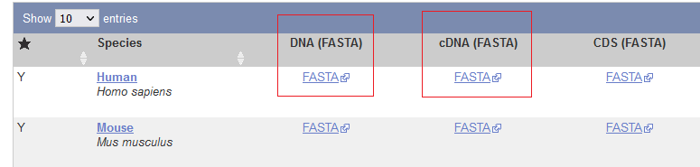
Index and Quantify the RNAseq Data
Run the quantifying script by issuing the following command: bash salmon_script.sh
NOTE: This will take some time, be patient, maybe stretch, grab a coffee ☕, or have lunch 🥪
When quantifying is finished a directory titled “salmon_output” will be created with a “quant.sf” file per sample. These files contain the quantified abundance that will be analyzed next. You may now safely exit out of the command prompt by pressing CTRL-d.
Data analysis
This pipeline is based off this excellent vignette on the subject written by the author of the analysis packages we will use.
Prepare your sample table
Download this example sample file and edit with the relevant details about your samples you received from GeneWiz (or other sequencing company).
The data should look like this:
| sample.id | condition | RIN | DV200 |
|---|---|---|---|
| veh1 | vehicle | 8.7 | 90.5 |
| treatment1 | treatment | 9.2 | 92.4 |
| … | … | … | … |
Make sure to save the file as a .csv (CSV UTF-8), this is the fifth option down in the save-as dialog in Excel. The filename should be samples.csv and it should be placed in the MYPROJECT directory.
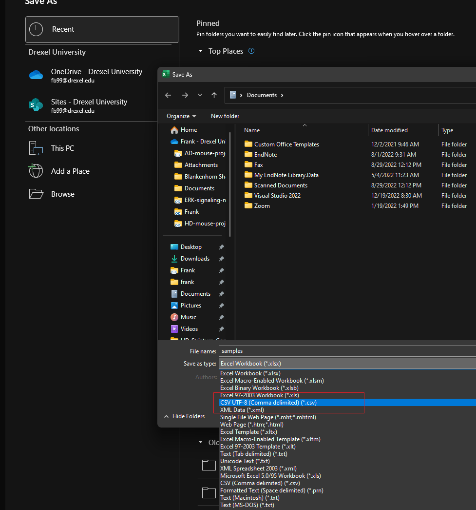
Setup RStudio
We will use RStudio to perform the rest of the analysis, follow these instructions for installation.
To get acclimated with RStudio, please consult this tutorial.
NOTE: We will need to install several packages for this analysis, do so with the following code:
if (!require("BiocManager", quietly = TRUE))
install.packages("BiocManager")
BiocManager::install("DESeq2")
BiocManager::install("biomaRt")
BiocManager::install("tximport")
BiocManager::install("EnhancedVolcano")Start a new project in your project directory
- Click “File -> New Project”
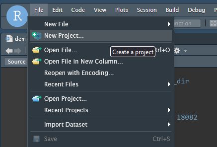
- Choose “Existing Directory”
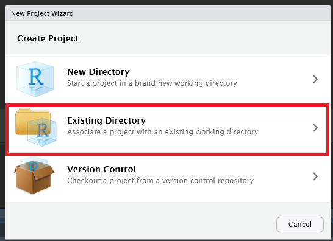
Browse and select the
MYPROJECTdirectory you created earlierOpen a new R Script file by clicking “File -> New File -> R Script”
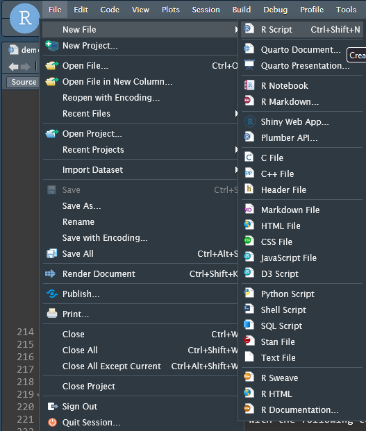
- Save you file and give it a name, I will use demo.R for this tutorial.
Read in quantified abundance files
We will use the Bioconductor tximport package to read in our quantified abundance tables using the samples.csv file as a guide.
In your R script file add the following code:
# Load Libraries
library(here)
library(rio)
library(CustomRFuncs) # install using devtools::install_github("fbearoff/CustomRFuncs")
library(DESeq2)
library(data.table)
library(readr)
library(tximport)
here::i_am("demo.R") ## THIS MUST MATCH THE FILENAME
## What species?
## "rnorvegicus", "mmusculus", "hsapiens"
species <- "hsapiens"
# TxImport
samples <-
import(here("samples.csv"), header = TRUE)
rownames(samples) <- samples$sample.id
samples$mapped_percent <-
import(here("salmon_output", "mapped_percent.txt"))[, 2]
files <- here("salmon_output", "quants", samples$sample.id, "quant.sf")
names(files) <- samples$sample.id
all(file.exists(files))
tx2gene <- as.data.table(getTx2gene(species))
txi <- tximport(files, type = "salmon", tx2gene = tx2gene[, 1:2])
txi_abund <- as.data.frame(txi$abundance)
gene_synonym <- unique(tx2gene[, -1])
txi_abund <- merge(txi_abund,
gene_synonym,
by.x = "row.names",
by.y = "gene_id"
)
txi_abund <- dplyr::rename(txi_abund, gene_id = Row.names)Run the above code by highlighting it and pressing CTRL-ENTER. This code first imports our sample data and condition table and then maps sample names to the appropriate files. It generates a tx2gene object which maps the transcripts we quantified to their gene ID, and pulls in other relevant metadata including gene name, genomic location, and description. Finally, a complete gene abundance object named txi_abundance is generated.
We will now utilize DESeq2 to model our experimental data with the following code.
# DESeq2
rownames(samples) <- colnames(txi$counts)
dds <- DESeqDataSetFromTximport(txi,
colData = samples,
design = ~condition
)
dds <- DESeq(dds)We have created a DESeqDataSet object called dds which contains all our samples modeled by the “condition” factor we specified in samples.csv. This will be the basis for downstream analysis. More complex experimental designs will alter the “design” formula, consult this vignette for more information.
QC
We will now generate a 2D PCA plot with the following code:
NOTE:
CustomRFuncsis an R package I have written containing functions wrapping generalized analysis tasks. These functions are opinionated and not designed for tweaking, you can access the underlying source code by simply typing the functions name in the R console. e.g.plotPCA
CustomRFuncs::plotPCA(dds)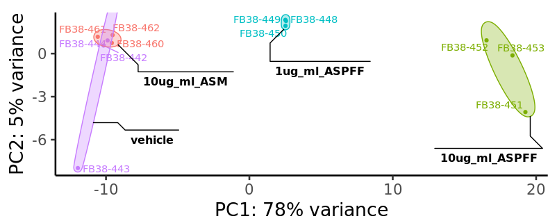
You should see a PCA plot pop up in the “Plots” tab in the lower right of the RStudio interface that resembles the above figure. If you would like to save the image click the “export” button.
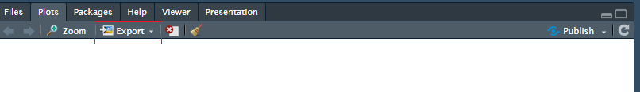
Differential expression analysis
We will now start comparing different conditions in our experiment. I am using example data from the α-syn project , so we will compare the monomer and oligomer α-syn treatments.
We can generate a comparison table using the following code:
comp <- CustomRFuncs::compDESeq2("10ug_ml_ASM", "10ug_ml_ASPFF")We can access the table by typing comp into the console or clicking its name in the “Environment” tab in the upper right of the RStudio interface.
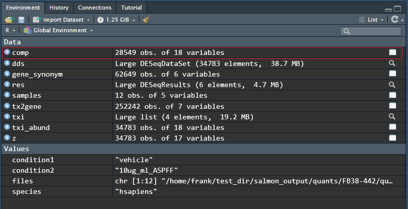
This comparison results table can be saved by running the following code:
export(comp, "comp.csv")Typical exploratory analysis figures we can make includes an MA plot that shows mean expression against fold change:
CustomRFuncs::plotMA("10ug_ml_ASM", "10ug_ml_ASPFF")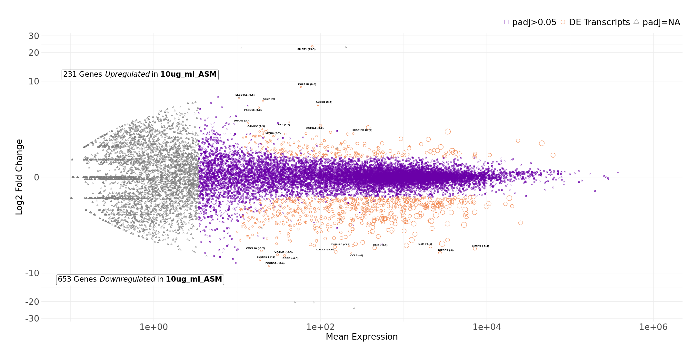
Volcano plot that shows significance against fold change:
CustomRFuncs::plotVolcano("10ug_ml_ASM", "10ug_ml_ASPFF")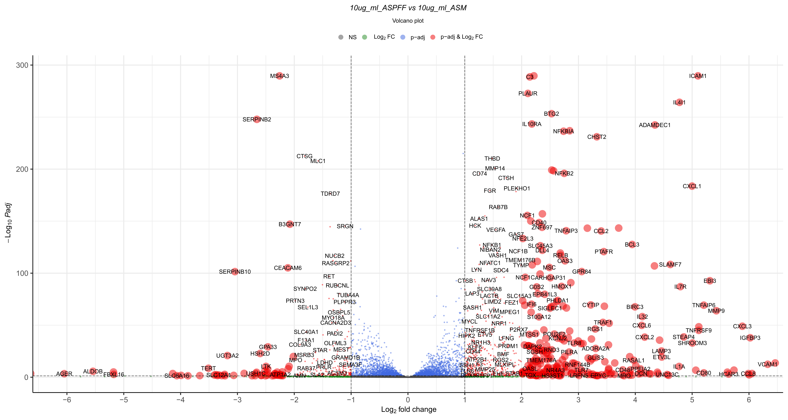
Clustered heatmap of top differentially expressed genes:
CustomRFuncs::clusteredHeatmap("10ug_ml_ASM", "10ug_ml_ASPFF")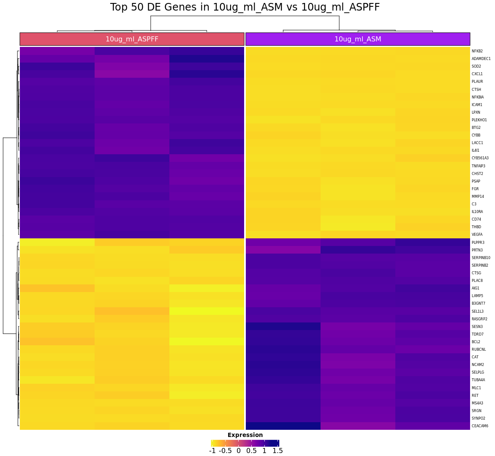
Plot a particular gene of interest:
CustomRFuncs::plotGene("IL1B")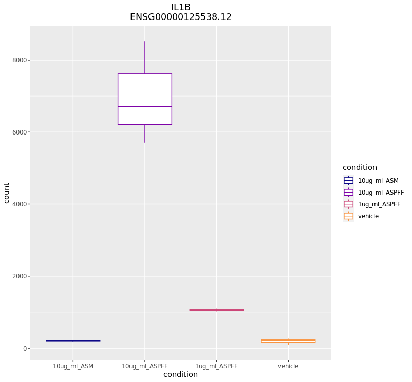
Conclusion
I have shown you the basics of performing a basic differential expression analysis of RNAseq data. This is only scratching the surface of what is possible, more advanced analyses may include GO enrichment, pathway analysis, and cell-signature analysis. I encourage you to thoroughly read the DESeq2 vignette and play around with R to get the most out of your data.